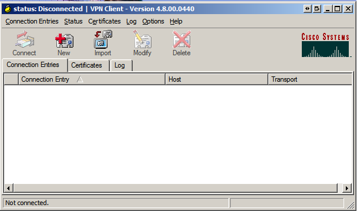
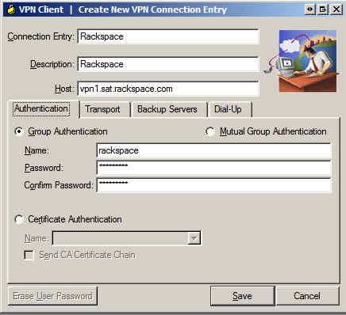
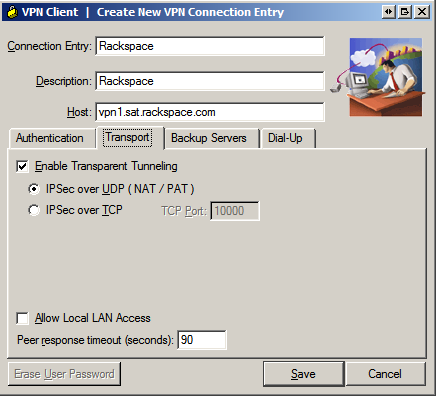
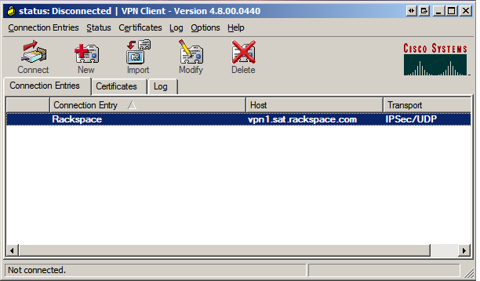
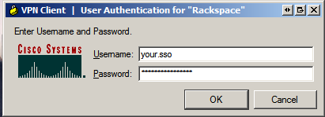
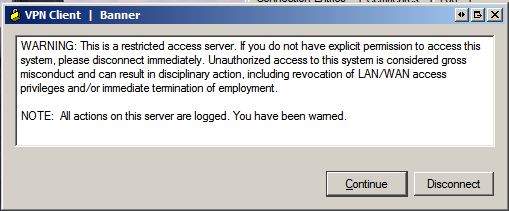
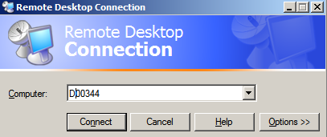

This document will assist you with installing and configuring the Cisco VPN Client for Windows XP. If at any time you have any problems or have any questions regarding the information this document provides, please feel free to contact the RITS Service Desk at x4357 (or (210) 312-4357) at any time and we will do our best to assist you in getting through this process.
Obtaining the Cisco VPN Client for Windows XP
if you have not downloaded the VPN Client from the previous page, you can obtain the file by clicking this link:
Cisco VPN Client for Windows XP
Installing the Cisco VPN Client for Windows XP/Vista
To begin installing the VPN Client, double-click the file you've just downloaded. You will have a window pop up that is asking you to "unzip" to a location. The file will automatically run Setup for you, so simply click the "Unzip" button in the top right corner.
Once the unzip process finishes, the installer wizard will pop up. At this point, all you will need to do is hit the "Next" button until the install begins. This can take a few minutes, as it has to configure your system for VPN.
****Once the installer finishes, you will need to reboot. This is a required step.****
After rebooting, go to your Start Menu (bottom left corner of the screen), go to "All Programs", and look for the new folder that was placed in this menu - it will be named "Cisco Systems VPN Client."
Inside of this folder, select the "VPN Client" file. This will open up the VPN Client. After the client starts up, you will be presented with the following screen:
Click the "New" button at the top of the screen.
In the next screen, fill in the details as you see them:
Note: The "Password" that you see there is "rackspace". The information in total is:
- Connection Entry: Rackspace
- Description: Rackspace
- Host: vpn1.sat.rackspace.com
- Authentication Tab
- Select: Group Authentication
- Name: rackspace
- Password: rackspace
- NOTE: The username and password MUST be lowercase.
Also, verify that the "Transport" tab and make sure that it looks like this:

- Transport Tab
- Checkmark Enable Transparent Tunneling
- Select: IPSec over UDP(NAT / PAT)
Click the "Save" button. Once finished, the VPN Client window will look like:
Click the Connect" button and you will be presented with the following prompt::
This prompt requires your SSO (Single Sign-On) credentials, which is the same as the username and password that you use to login to all of the systems here at Rackspace.
Once you have filled that out, click the "Ok" button.
You will be presented with one final screen:

This is simply informing you that you are connecting to a secure, restricted access server. It is both for your information, comfort, and awareness. Please be aware of all the warnings it provides.
Once you have finished with that prompt, simply click the "Continue" button, and the VPN Client will finish connecting. ONce this is done, you will see a closed lock in your systems tray at the bottom right hand corner of your screen. You are now connected to the Rackspace internal network!
Verifying/Obtaining Information and Availability of Remote Desktop Client
Using an application from Microsoft, it is possible to access your Rackspace desktop as though you were sitting right at your desk. This provides you with all of the software and files that you normally have while at Rackspace. We will walk you through getting this set up right now.
Before you can remote into your box, you will need to have some information. The first is your computer name. You can find this easily by looking on top of your Dell or white box and locating the white barcode tag. Under the barcode, there is a 5 digit number. For Dells, if you add the letter "D" in front of this number, you now have your Computer Name. For example, if the number on the barcode is 00292, your computer's name is D00292. If you have a white box, your code should begin with an "R."
Next, we need to make sure you have access to the Remote Desktop client:
- Begin by going to your Start Menu, going to All Programs, then "Accessories," followed by "Communications."
- If you do not see "Remote Desktop Connection," proceed to the next step. If you do see it, open the application and scroll down to the next section "Setting up the Remote Desktop Client."
- If you did not see the "Remote Desktop Connection" application, you will need to install it from Microsoft.
- You can obtain the set up file from: Microsoft Remote Desktop Client
- After running set up, you should now have it in the same location, and can proceed on to the next section!
Configuring and Using the Remote Desktop Client
The Remote Desktop Client is very easy to use and configure. When you open it up for the first time, you will see the following screen:

To connect to your system, all you need to do is put your Computer's Name into the text box next to "Computer:". Once you have placed this into the box, simply hit the "Connect" button, and it will begin connecting to your system.If everything went well, you should be prompted to log into your desktop. Congratulations, you are now connected to your computer!
Now that you've connected and remotely logged into your Rackspace computer, you can begin doing whatever you need to do. If you are working on your computer remotely, anything you do will be saved on that computer, not locally on your own. You are also able to access any folders, applications, file servers, or systems that are connected to the Rackspace network. Please be aware of your surroundings, though, as while at home you may not have the same protections against peering eyes on confidential information. Please take care to lock your computer or log out if you need to do anything away from your computer for an extended period of time.
Please remember that if at any time you run into any problems or have any questions, or concerns you can always contact the help desk at x4357 (or from outside rackspace at (210) 312-4357), and we will be glad to assist you. You can also put a GENIE support ticket in at any time, if you are currently VPNed in! If you are not in the office though, you may want to include a telephone number that we can reach you at in case we need to contact you for information.
Last Updated: Thursday, Oct 18th @ 4:19pm by Adam Hubscher - RITS Desktop Solutions